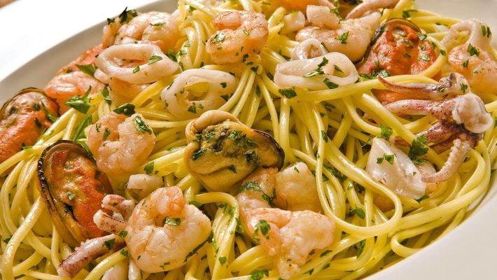

Espaguete com frutos do mar da premiatto

Ingredientes:
- 210 g de espaguete cozido
- 25 g de anéis de lula
- 25 g de mariscos
- 25 g de cabeça de lula
- 1 pimentão amarelo
- 25 g de camarão
- 30 g de molho ao sugo
- 30 g de parmesão
- 30 g de manteiga
- 10 g de salsinha
- Em uma frigideira colocar a manteiga e deixar ferver, acrescentar os frutos do mar e o molho ao sugo. Colocar o molho sobre o espaguete e o parmesão ralado. Gratinar e servir em seguida.